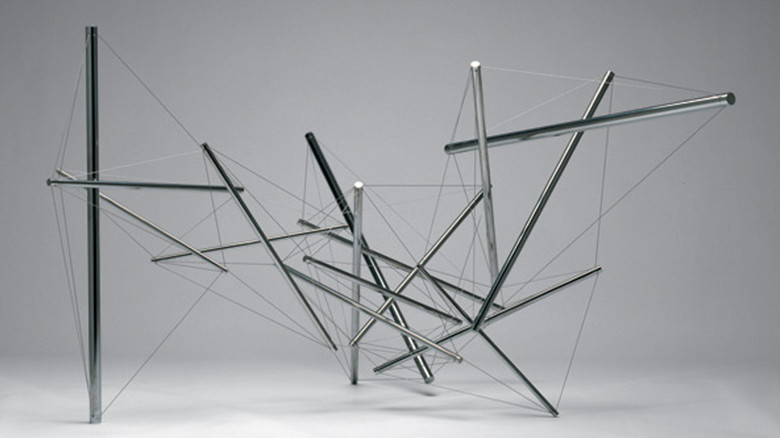

minimal

Kenneth Snelson
http://www.marlboroughgallery.com/galleries/new-york/artists/kenneth-snelson-どんな人
テンセグリティー構造(引っ張る力と圧縮する力によってバランスをとる構造)を利用してオブジェなどを制作してきたアーティストです。
-解説
鉄パイプとケーブルを組み合わせて作品を制作しています。鉄パイプの部分はあえて離しながら構成しているので遠くから見ると、パイプが踊りながら宙を浮いているように見えます。
-好きなところ
バランスのとれている形は見てて気持ちがいいので好きです。